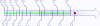

This page relates only to
the open-source versions of TA-Lib.
You can
browse the latest code online.
Contributors
should visit and use the TA-Lib Forum
for questions and bug report.
Concurrent
development is handled using SVN
on SourceForge. If you
have a SVN client installed, you can have an anonymous read access to the
repository ( more here
). Request for write access are done on the Forum.
Additional documentation:
How-to add a technical analysis function
Open-Source Release History and Roadmap
TA-Lib in development since 1999 and is now extremely stable and time
tested. Release are now rarer.
Open Source version of TA-Lib starts with a zero. Derived commercial
product uses an independent version scheme.
The next 0.5 release will take place only after the community adds at
least 10 new technical analysis functions or a major bug is found.

(Click the picture for previous milestones)
License rules for contributors
The "TA-Lib
BSD License" is before all intended to protect all the contributors from any
liabilities and should be found at the top of every files where an
individual or legal entity put their name.
The "TA-Lib
BSD License" is also intended to keep the project accessible to a large
audience, including commercial and/or closed-source projects.
Consequently:
-
GPL / LGPL contribution
cannot be part of the TA-Lib package.
-
TA-Lib package must remain entirely BSD-Like.
-
Individual
BSD-Like License for contribution to TA-Lib are not accepted. They do
not give additional benefit to the TA-Lib users or to the contributors.
All contributions should fall under the same "TA-Lib BSD License".
List of contributors is preserved at the top of the source code in the
"Contributors/History" sections. Contributors can mention an e-mail or
website in the contributors section.
TA-Lib™ is a registered trademark.
A few of the products using the open source TA-Lib
The following products use whole or parts of the open source
portion of TA-Lib.
These products are developed and distributed
independently.
| Advanced Stock Tracker |
Web-based application for
keeping track of stocks. |
|
Dukascopy |
Currency (FOREX) Trading
Platform |
|
EclipseTrader |
Focused to the building of
an online stock trading system, featuring pricing watch, charts with
technical analysis indicators, level II/market depth view, news
watching, and integrated trading. |
|
NexTick |
Open-source daytrader tool
focusing on usability and simplicity. Java base. |
|
Personal
Stock Streamer |
Quotes, portfolio
management, reports, indicators and scripting.(DTLink Software). |
|
Qtstalker |
Qtstalker is a user friendly
Technical Analysis package for GNU/Linux. |
| TA-Lib
MATLAB Toolbox |
Open-source
MATLAB API for TA-Lib. |
|
Thinking Stuff |
Automated
trading platform. Build strategies by selecting and adapting rules with
mouse clicks instead of using a script language. Supports
Oanda |
|
Tradery.com |
A free online trading
community. Back test and optionally share strategies with others. |
|
Trade
Strategist |
Create and Test trading
strategy for Mac OS X. |
| (Tell us when
you are using TA-Lib in your product. It is highly appreciated) |
{kind=link}